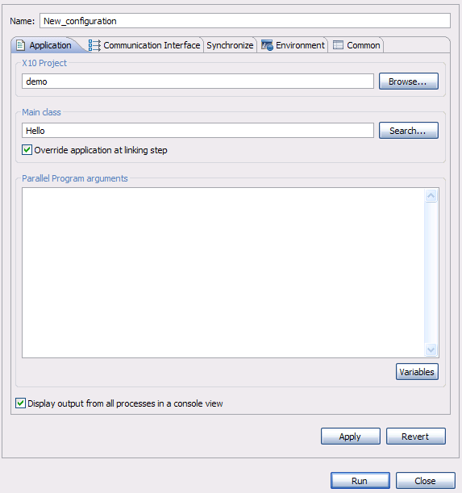

This section assumes you have built and validated your X10 Application with the C++ back-end. See Creating and validating an X10 project with the C++ back-end for more information on doing this.
To access the launch configuration dialog, select Run > Run Configurations...
Then create a new launch configuration for "X10 Application (C++ back-end)"

The Application tab defines mostly the main class to execute within an X10 project with some specific arguments.
Select the project and the main class of the project to be executed.
The Communication Interface tab is initially empty, but once a project is selected,
it should be filled in. The form is populated
according to the Communication Interface type (selected in the project platform configuration) in order to allow
customizations. Make any changes necessary (e.g. you probably want to increase the number of processes beyond 1.)

When all the information is filled in and valid, the Run button in the lower right area of the launch dialog should become enabled. 
Clicking on the Run button will create the C++ executable for the X10 main class selected and will run it with the communication
interface parameters defined. X10DT will switch then to the PTP Parallel Runtime perspective to report the
application run.

Continue to Developing/editing your X10 source code